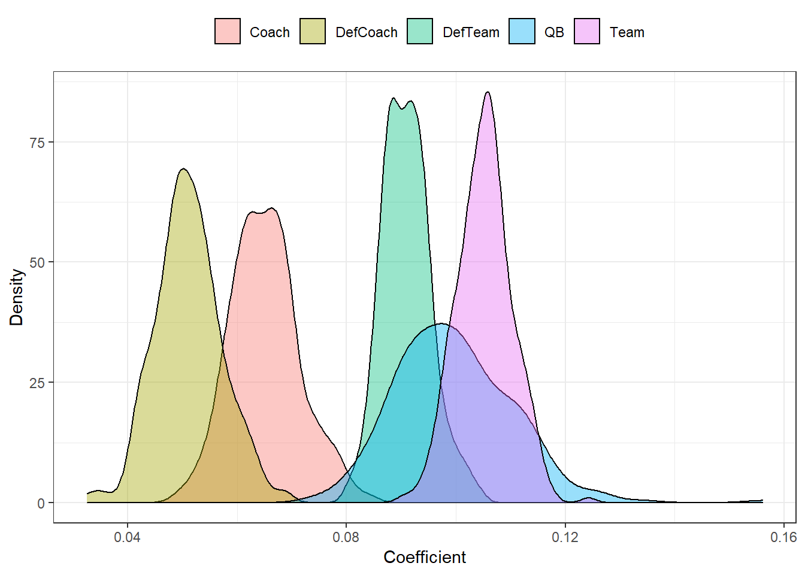

Intro
This is a “test” post that I decided to use to show people how I create HTML-format posts using R Markdown. People can follow the source code here.
Metadata and format
This is the YAML front matter. Add this to line 1, including the --- at start and end.
---
author: "Adrian Cadena"
date: "11-22-2020"
repository_url: https://github.com/adriancm93/mixed_effects_bootstrapping
output:
html_document:
toc: yes
toc_depth: '3'
df_print: paged
distill::distill_article:
self_contained: no
toc: yes
toc_depth: 3
---To format R code chunks, use this code add ``` at start and end:
{r setup, include=FALSE}
knitr::opts_chunk$set(
echo = TRUE,
message = FALSE,
warning = FALSE,
dpi = 600,
tidy = 'styler'
)
Font
This is the code I used to set the font size, right after the front matter.
<style type="text/css">
body{
font-size: 14pt;
}
</style>
Non-R code
To add non-R code without it being run, like I did with front matter and font matter, add ``` at the start and end of such code.
R code
You can run R code by inserting R code chunks. Refer to my source code.
You can change each block of code’s configurations by clicking on the engine icon on the top-right of the block. Show output only, show code and output, show nothing (run code), show nothing (don’t run code). If you want to show R code without running it, just use the ``` method we did earlier.
R code not to run
seasons <- 2000:2019
pbp <- purrr::map_df(seasons, function(x) {
readRDS(
url(
glue::glue("https://raw.githubusercontent.com/guga31bb/nflfastR-data/master/data/play_by_play_{x}.rds")
)
)
})R code to run
print("This is a code block")## [1] "This is a code block"You can print tables and plots:
Table
library(ggplot2)
library(dplyr)
qb <- data.frame(coef = readRDS("passer1.rds"), effect = "QB")
team <- data.frame(coef = readRDS("team1.rds"), effect = "Team")
coach <- data.frame(coef = readRDS("poscoach1.rds"), effect = "Coach")
defteam <- data.frame(coef = readRDS("defteam1.rds"), effect = "DefTeam")
defcoach <- data.frame(coef = readRDS("defcoach1.rds"), effect = "DefCoach")
plot2 <- rbind(qb, team, coach, defteam, defcoach)
plot2 %>% head()## coef effect
## 1 0.08658575 QB
## 2 0.08238340 QB
## 3 0.09665065 QB
## 4 0.11136623 QB
## 5 0.10731433 QB
## 6 0.08128378 QBPlots
library(ggplot2)
qb <- data.frame(coef = readRDS("passer1.rds"), effect = "QB")
team <- data.frame(coef = readRDS("team1.rds"), effect = "Team")
coach <- data.frame(coef = readRDS("poscoach1.rds"), effect = "Coach")
defteam <- data.frame(coef = readRDS("defteam1.rds"), effect = "DefTeam")
defcoach <- data.frame(coef = readRDS("defcoach1.rds"), effect = "DefCoach")
plot2 <- rbind(qb, team, coach, defteam, defcoach)
ggplot(plot2, aes(x = coef, fill = effect)) +
geom_density(alpha = .4) +
theme_bw() +
labs(x = "Coefficient", y = "Density")
Insert images
You can also insert images using the following code. Don’t add it to a code block.
Result: 
Convert to HTML
Click on “Knit” and select Knit to HTML.